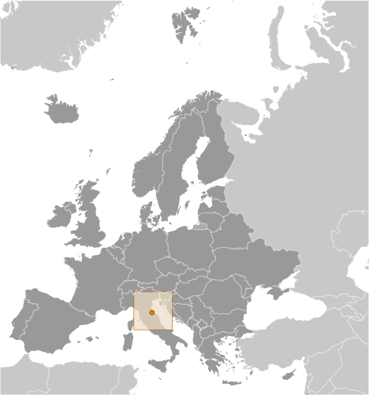
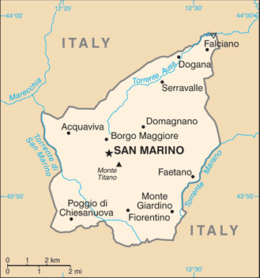
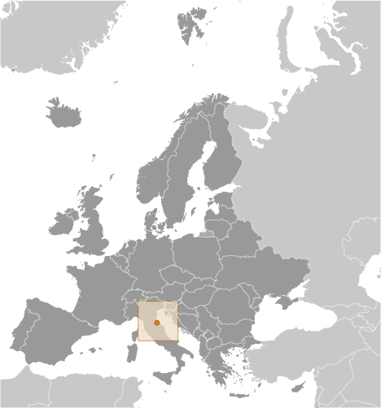
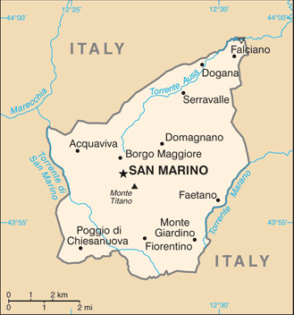

Europe :: SAN MARINO
Introduction :: SAN MARINO
-
Geographically the third smallest state in Europe (after the Holy See and Monaco), San Marino also claims to be the world's oldest republic. According to tradition, it was founded by a Christian stonemason named MARINUS in A.D. 301. San Marino's foreign policy is aligned with that of the EU, although it is not a member; social and political trends in the republic track closely with those of its larger neighbor, Italy.
Geography :: SAN MARINO
-
Southern Europe, an enclave in central Italy43 46 N, 12 25 EEuropetotal: 61 sq kmland: 61 sq kmwater: 0 sq kmcountry comparison to the world: 229about one-third the size of Washington, DCtotal: 37 kmborder countries (1): Italy 37 km0 km (landlocked)none (landlocked)Mediterranean; mild to cool winters; warm, sunny summersrugged mountainsmean elevation: NAelevation extremes: lowest point: Torrente Ausa 55 mhighest point: Monte Titano 739 mbuilding stoneagricultural land: 16.7%arable land 16.7%; permanent crops 0%; permanent pasture 0%forest: 0%other: 83.3% (2011 est.)0 sq km (2012)occasional earthquakesair pollution; urbanization decreasing rural farmlandsparty to: Biodiversity, Climate Change, Desertification, Whalingsigned, but not ratified: Air Pollutionlandlocked; smallest independent state in Europe after the Holy See and Monaco; dominated by the Apennine Mountains
People and Society :: SAN MARINO
-
33,537 (July 2017 est.)country comparison to the world: 215noun: Sammarinese (singular and plural)adjective: SammarineseSammarinese, ItalianItalianRoman Catholic0-14 years: 15.22% (male 2,709/female 2,396)15-24 years: 11.52% (male 2,003/female 1,861)25-54 years: 40.78% (male 6,435/female 7,240)55-64 years: 12.92% (male 2,142/female 2,191)65 years and over: 19.56% (male 2,945/female 3,615) (2017 est.)total: 44.4 yearsmale: 43.3 yearsfemale: 45.4 years (2017 est.)country comparison to the world: 80.74% (2017 est.)country comparison to the world: 1478.6 births/1,000 population (2017 est.)country comparison to the world: 2178.7 deaths/1,000 population (2017 est.)country comparison to the world: 727.5 migrant(s)/1,000 population (2017 est.)country comparison to the world: 15urban population: 94.2% of total population (2017)rate of urbanization: 0.38% annual rate of change (2015-20 est.)SAN MARINO 4,000 (2014)at birth: 1.1 male(s)/female0-14 years: 1.14 male(s)/female15-24 years: 1.06 male(s)/female25-54 years: 0.89 male(s)/female55-64 years: 0.99 male(s)/female65 years and over: 0.81 male(s)/femaletotal population: 0.94 male(s)/female (2016 est.)total: 4.3 deaths/1,000 live birthsmale: 4.5 deaths/1,000 live birthsfemale: 4.1 deaths/1,000 live births (2017 est.)country comparison to the world: 188total population: 83.3 yearsmale: 80.8 yearsfemale: 86.1 years (2017 est.)country comparison to the world: 51.5 children born/woman (2017 est.)country comparison to the world: 1986.1% of GDP (2014)country comparison to the world: 1026.36 physicians/1,000 population (2014)3.8 beds/1,000 population (2012)NANANA2.4% of GDP (2011)total: 15 yearsmale: 15 yearsfemale: 16 years (2012)total: 28%male: 22.9%female: 34.4% (2015 est.)
Government :: SAN MARINO
-
conventional long form: Republic of San Marinoconventional short form: San Marinolocal long form: Repubblica di San Marinolocal short form: San Marinoetymology: named after Saint MARINUS, the traditional founder of the countryparliamentary republicname: San Marino (city)geographic coordinates: 43 56 N, 12 25 Etime difference: UTC+1 (6 hours ahead of Washington, DC, during Standard Time)daylight saving time: +1hr, begins last Sunday in March; ends last Sunday in October9 municipalities (castelli, singular - castello); Acquaviva, Borgo Maggiore, Chiesanuova, Domagnano, Faetano, Fiorentino, Montegiardino, San Marino Citta, Serravalle3 September 301 (traditional founding date)Founding of the Republic (or Feast of Saint Marinus), 3 September (A.D. 301)history: consists of several legislative instruments, chief among them the Statutes (Leges Statuti) of 1600 and the Declaration of Citizen Rights of 1974amendments: proposed by the Great and General Council; passage requires two-thirds majority Council vote; Council passage by absolute majority vote also requires passage in a referendum; Declaration of Civil Rights amended several times, last in 2012 (2016)civil law system with Italian civil law influenceshas not submitted an ICJ jurisdiction declaration; accepts ICCt jurisdictioncitizenship by birth: nocitizenship by descent only: at least one parent must be a citizen of San Marinodual citizenship recognized: noresidency requirement for naturalization: 30 years18 years of age; universalchief of state: co-chiefs of state Captain Regent Mateo FIORINI and Captain Regent Enrico CARATTONI (for the period 1 October 2017 - 1 April 2018)head of government: Secretary of State for Foreign and Political Affairs Nicola RENZI (since 27 December 2016)cabinet: Congress of State elected by the Grand and General Councilelections/appointments: co-chiefs of state (captains regent) indirectly elected by the Grand and General Council for a single 6-month term; election last held in September 2017 (next to be held in March 2018); secretary of state for foreign and political affairs indirectly elected by the Grand and General Council for a single 5-year term; election last held on 11 November 2012 (next to be held by November 2017)election results: Mateo FIORINI (Popular Alliance) and Enrico CARATTONI (SSD) elected captains regent; percent of Grand and General Council vote - NA; Pasquale VALENTINI (PDCS) elected secretary of state for foreign and political affairs; percent of Grand and General Council vote - NAnote: the captains regent preside over meetings of the Grand and General Council and its cabinet (Congress of State), which has 9 other members who are selected by the Grand and General Council; assisting the captains regent are 9 secretaries of state; the secretary of state for Foreign Affairs has some prime ministerial rolesdescription: unicameral Grand and General Council or Consiglio Grande e Generale (60 seats; members directly elected by proportional representation vote in 2 rounds if needed; members serve 5-year terms)elections: last held on 20 November 2016 (next to be held by November 2021)election results: percent of vote by party - San Marino First 39.4% (PDCS 24.5%, PS 7.7%, PSD 7.2%), Adesso.sm 31.0% Democratic Socialist Left 12.1%, Repubblica Futura 9.6%, Civic 10 9.3%), Democracy in Action 22.8% RETE Movement 18.3%, Democratic Movement-San Marino Together 4.5%); seats by party - San Marino First 25 (PDCS 16, PS 5, PSD 4), Adesso.sm 20 (Democratic Socialist Left 8, Repubblica Futura 6, Civic 10 6), Democracy in Action 15 RETE Movement 12, Democratic Movement-San Marino Together 3)highest court(s): Council of Twelve or Consiglio dei XII (consists of 12 members); note - the College of Guarantors for the Constitutionality and General Norms functions as San Marino's constitutional courtjudge selection and term of office: judges elected by the Grand and General Council from among its own to serve 5-year termssubordinate courts: first instance and first appeal criminal, administrative, and civil courts; justices of the peace or conciliatory judgesSan Marino Common Good (includes Sammarinese Christian Democratic Party or PDCS [Marco GATTI], We Sammarinese or NS [Marco ARZILLI], Party of Socialists and Democrats or PSD [Paride ANDREOLI], Popular Alliance or AP [Gabriele GATTI])Entente for the Country (Intesa per il Paese; includes Socialist Party or PS [Alessandro BEVITORI], Union for the Republic or UPR [Marco PODESCHI)Active Citizenship (includes Civic 10 [Mateo CIACCI], United Left or SU [Gastone PASOLINI])NACE, FAO, IAEA, IBRD, ICAO, ICC (NGOs), ICCt, ICRM, IDA, IFRCS, ILO, IMF, IMO, Interpol, IOC, IOM (observer), IPU, ITU, ITUC (NGOs), LAIA (observer), OPCW, OSCE, Schengen Convention (de facto member), UN, UNCTAD, UNESCO, Union Latina, UNWTO, UPU, WHO, WIPOchief of mission: Ambassador Damiano BELEFFI (since 21 July 2017)chancery: 1711 N Street NW, 2nd floor, Washington, DC 20036telephone: 202-250-1535FAX: 202-223-2748the US does not have an embassy in San Marino; the US Ambassador to Italy is accredited to San Marinotwo equal horizontal bands of white (top) and light blue with the national coat of arms superimposed in the center; the main colors derive from the shield of the coat of arms, which features three white towers on three peaks on a blue field; the towers represent three castles built on San Marino's highest feature, Mount Titano: Guaita, Cesta, and Montale; the coat of arms is flanked by a wreath, below a crown and above a scroll bearing the word LIBERTAS (Liberty); the white and blue colors are also said to stand for peace and liberty respectivelythree peaks each displaying a tower; national colors: white, bluename: "Inno Nazionale della Repubblica" (National Anthem of the Republic)lyrics/music: no lyrics/Federico CONSOLOnote: adopted 1894; the music for the lyric-less anthem is based on a 10th century chorale piece
Economy :: SAN MARINO
-
San Marino's economy relies heavily on tourism, banking, and the manufacture and export of ceramics, clothing, fabrics, furniture, paints, spirits, tiles, and wine. The manufacturing and financial sectors account for more than half of San Marino's GDP. The per capita level of output and standard of living are comparable to those of the most prosperous regions of Italy.San Marino's economy has been contracting since 2008, largely due to weakened demand from Italy - which accounts for nearly 90% of its export market - and financial sector consolidation. Difficulties in the banking sector, the recent global economic downturn, and the sizable decline in tax revenues have contributed to negative real GDP growth. The government has adopted measures to counter the downturn, including subsidized credit to businesses and is seeking to shift its growth model away from a reliance on bank and tax secrecy. San Marino does not issue public debt securities; when necessary, it finances deficits by drawing down central bank deposits.The economy benefits from foreign investment due to its relatively low corporate taxes and low taxes on interest earnings. The income tax rate is also very low, about one-third the average EU level. San Marino continues to work towards harmonizing its fiscal laws with EU and international standards. In September 2009, the OECD removed San Marino from its list of tax havens that have yet to fully adopt global tax standards, and in 2010 San Marino signed Tax Information Exchange Agreements with most major countries. In 2013, the San Marino Government signed a Double Taxation Agreement with Italy, but a referendum on EU membership failed to reach the quorum needed to bring it to a vote.$2.023 billion (2016 est.)$1.978 billion (2015 est.)$1.947 billion (2014 est.)note: data are in 2016 dollarscountry comparison to the world: 196$1.591 billion (2016 est.)1% (2016 est.)0.5% (2015 est.)-0.9% (2014 est.)country comparison to the world: 171$59,500 (2016 est.)$58,900 (2015 est.)$58,600 (2014 est.)note: data are in 2016 dollarscountry comparison to the world: 18household consumption: NA%government consumption: NA%investment in fixed capital: NA%investments in inventories: NA%exports of goods and services: 176.6%imports of goods and services: -153.3% (2011)agriculture: 0.1%industry: 39.2%services: 60.7% (2009)wheat, grapes, corn, olives; cattle, pigs, horses, beef, cheese, hidestourism, banking, textiles, electronics, ceramics, cement, wine-1.1% (2012 est.)country comparison to the world: 17021,960 (September 2013 es)country comparison to the world: 212agriculture: 0.2%industry: 33.5%services: 66.3% (September 2013 es)8.6% (2016 est.)8.1% (2013 est.)country comparison to the world: 111NA%lowest 10%: NA%highest 10%: NA%revenues: $667.7 millionexpenditures: $713.8 million (2011 est.)41.9% of GDP (2011 est.)country comparison to the world: 33-2.9% of GDP (2011 est.)country comparison to the world: 11521.6% of GDP (2016 est.)19.7% of GDP (2015 est.)country comparison to the world: 181calendar year0.6% (2016 est.)0.1% (2015 est.)country comparison to the world: 685.92% (31 December 2011 est.)5.38% (31 December 2010 est.)country comparison to the world: 123$1.326 billion (31 December 2007)country comparison to the world: 144$4.584 billion (31 December 2007)country comparison to the world: 128$8.822 billion (30 September 2010)$8.008 billion (31 December 2009)country comparison to the world: 111$NA$0 (2016 est.)$3.827 billion (2011 est.)$2.576 billion (2010 est.)country comparison to the world: 114building stone, lime, wood, chestnuts, wheat, wine, baked goods, hides, ceramics$2.551 billion (2011 est.)$2.132 billion (2010 est.)country comparison to the world: 151wide variety of consumer manufactures, food, energy$392 million (2014 est.)$539.3 million (2013 est.)country comparison to the world: 148$NAeuros (EUR) per US dollar -0.9214 (2016 est.)0.885 (2015 est.)0.885 (2014 est.)0.7634 (2013 est.)0.7752 (2012 est.)
Energy :: SAN MARINO
-
electrification - total population: 100% (2016)
Communications :: SAN MARINO
-
total subscriptions: 16,000subscriptions per 100 inhabitants: 48 (July 2016 est.)country comparison to the world: 186total: 36,570subscriptions per 100 inhabitants: 110 (July 2016 est.)country comparison to the world: 206general assessment: automatic telephone system completely integrated into Italian systemdomestic: combined fixed-line and mobile-cellular teledensity over 155 telephones per 100 personsinternational: country code - 378; connected to Italian international network (2016)state-owned public broadcaster operates 1 TV station and 3 radio stations; receives radio and TV broadcasts from Italy (2012).smtotal: 17,200percent of population: 52.6% (July 2016 est.)country comparison to the world: 202
Transportation :: SAN MARINO
-
T7 (2016)total: 292 kmpaved: 292 km (2006)country comparison to the world: 207
Military and Security :: SAN MARINO
-
no regular military forces; voluntary Military Corps (Corpi Militari) performs ceremonial duties and limited police support functions (2010)18 is the legal minimum age for voluntary military service; no conscription; government has the authority to call up all San Marino citizens from 16-60 years of age to service in the military (2012)defense is the responsibility of Italy
Transnational Issues :: SAN MARINO
-
none